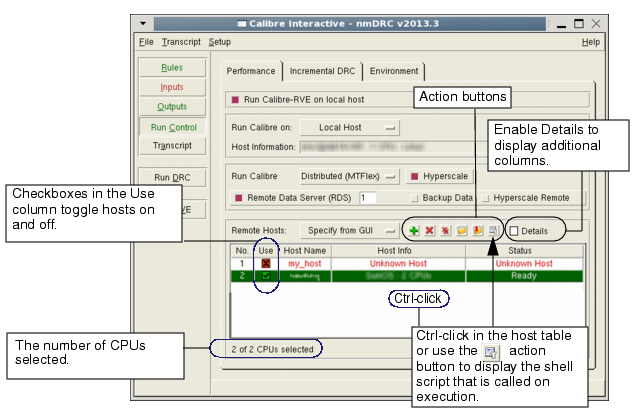

Configuring for Distributed (MTflex) Execution
Calibre® MTflex™ allows you to use your existing network as a low-cost distributed computing platform.
For more information about Calibre MTflex, see the Calibre Administrator's Guide.
Prerequisites
Configure your environment to allow rsh to execute your Calibre job remotely. This may include creating and editing a .rhosts file in your home directory.
(Optional) If necessary, set one of the following environment variables to prevent “Word too long” errors from the remote host. This error is seen when the command line length exceeds the limit set in the shell environment. By default, Calibre Interactive uses the C shell (/bin/csh) to launch the MTflex primary script. You can specify the Bash shell instead, which allows a longer command line, by defining one of the following environment variables:
CALIBRE_CI_REMOTE_COMMAND_USE_BASH
When set, use the Bash shell to launch the MTflex primary script.
CALIBRE_CI_REMOTE_COMMAND_LSF_USE_BASH
When set, use the Bash shell to launch the MTflex primary script for Spectrum LSF runs only.
CALIBRE_CI_REMOTE_COMMAND_GRID_USE_BASH
When set, use the Bash shell to launch the MTflex primary script for Univa Grid Engine runs only.
In most cases the long command line is due to a long $path variable.
Procedure
- Configure the remote hosts
with the GUI Remote Host table. Note:
If you are running on Local Host or Remote Host, you have the option of providing a configuration file to specify the Calibre MTflex remote hosts; the file is used as the parameter for the ‑remotefile command line argument.
Select “Specify File” in the dropdown list at the top of the remote hosts table, then specify the configuration file. (The default setting for the dropdown list is “Specify from GUI.”) Go to Step 6.
Use the action buttons to add or remove hosts. You can also right-click in the Remote Hosts table to get a popup menu. These menu selections are available:
 Add
Host — Adds hosts to the parameter list for the calibre -remote
command line switch.
Add
Host — Adds hosts to the parameter list for the calibre -remote
command line switch.Delete Host and
 Delete
All Hosts — As indicated.
Delete
All Hosts — As indicated.Load Hosts File — Opens a file browser to select the configuration file for the ‑remotefile command line switch.
Save Hosts File — Save a configuration file.
 View
Hosts File — View the configuration file (Ctrl-click in the host
table).
View
Hosts File — View the configuration file (Ctrl-click in the host
table). For more information, see -remotefile and “About the Configuration File” in the Calibre Administrator’s Guide.
See the following figure for an example Calibre MTflex configuration on a local host.
Figure 1. Example Calibre MTflex Configuration With Local HostSee “Using the Univa Grid Engine Option” for an example Calibre MTflex configuration on an Univa Grid Engine.